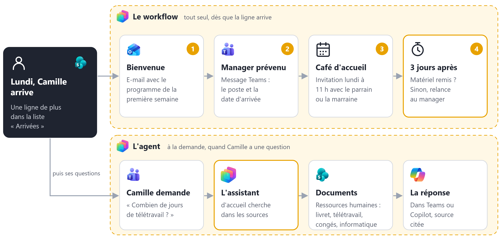
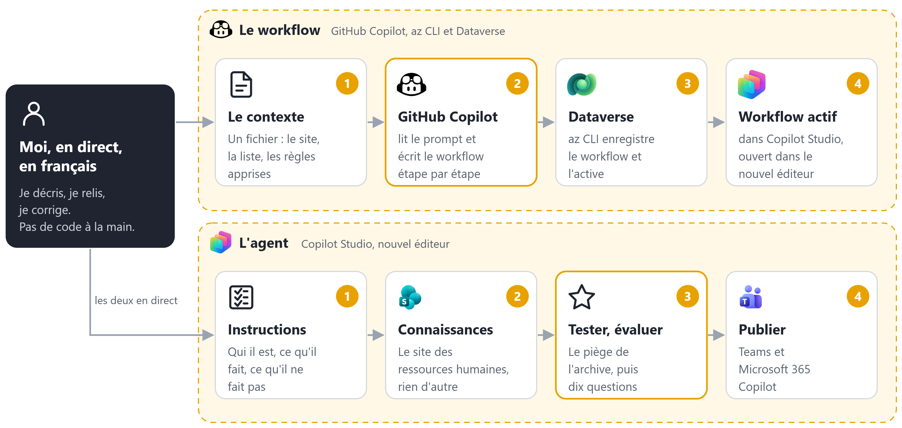

✉️
BienvenueUn e-mail avec le programme de sa première semaine👋
Manager prévenuUn message Teams avec le poste et la date☕
Café d'accueilLundi à 11 h avec son parrain ou sa marraine💻
3 jours aprèsMatériel pas remis ? Relance du managerCamille arrive lundi chez Contoso, une entreprise fictive. Deux choses vont l'accueillir : un workflow qui s'occupe de tout dès que son arrivée est saisie, et un agent qui répond à ses questions.
Écrit par GitHub Copilot à partir d'une description en français, enregistré dans Dataverse avec Azure CLI, il s'ouvre ensuite dans le nouvel éditeur de Copilot Studio.
Construit dans Copilot Studio : des instructions, les documents des ressources humaines comme seule source, un piège à déjouer, une évaluation, puis la publication dans Teams.

Ce que vous allez construire. Cliquez pour agrandir.

Et comment. Cliquez pour agrandir.
az) : installer Azure CLI.⏱️ Environ 15 minutes
/sites/contoso-rh).politique-teletravail-2021.pdf. Cette vieille politique est le piège de l'étape 4 : gardez-la.| Nom affiché | Nom à la création | Type |
|---|---|---|
| Nom complet | (la colonne Titre existante, renommée) | Ligne de texte |
Email | Ligne de texte | |
| Poste | Poste | Ligne de texte |
| Date d'arrivée | DateArrivee | Date, sans heure |
| Manager | Manager | Personne |
| Parrain ou marraine | Parrain | Personne |
| Matériel remis | MaterielRemis | Choix : Non, Oui (Non par défaut) |
Ajoutez deux arrivées passées pour que la liste ne soit pas vide (par exemple Hugo Bernard et Inès Moreau, avec vous comme manager et parrain).
⏱️ Environ 10 minutes
| Dans le fichier | Où la trouver |
|---|---|
TENANT_ID | Identifiant (ID) du tenant : az login puis az account show --query tenantId -o tsv |
ENVIRONNEMENT_ID | Dans l'adresse de Power Automate ou de Copilot Studio, après /environments/ |
URL_DATAVERSE | Centre d'administration Power Platform, Environnements, votre environnement : « URL de l'environnement », par exemple https://votre-env.crm.dynamics.com (sans barre oblique finale) |
URL_DU_SITE | L'adresse du site, par exemple https://votre-tenant.sharepoint.com/sites/contoso-rh |
LISTE_ID | Liste Arrivées, Paramètres de la liste : l'adresse contient List=%7B…%7D, l'ID est entre les accolades (sans %7B ni %7D) |
Collez vos 5 valeurs : la page remplace les repères dans copilot-instructions.md et vous le télécharge. Plus de rechercher-remplacer à la main.
/environments/ dans l'adresse..dynamics.com, sans barre oblique finale.%7B et %7D dans l'adresse des paramètres.⏱️ Environ 15 minutes, dont quelques minutes où Copilot travaille seul
C:\lab-accueil) et mettez-y .github\copilot-instructions.md (le fichier complété à l'étape 2). Dans un dépôt git, l'application GitHub Copilot travaille sur une copie du dépôt où ce fichier non suivi n'existe pas.az login --tenant VOTRE_TENANT_ID.copilot dans le dossier).flux/ qui construit le workflow (la définition et le dessin de l'éditeur), l'enregistre dans Dataverse et l'active. Il vous donne le lien : le workflow s'ouvre dans le nouvel éditeur de Copilot Studio, page Workflows. Quelques minutes, sans question.workflows. Elle contient deux vues du même workflow : la définition exécutée et le graphe que dessine l'éditeur. Sans le graphe, le workflow tourne mais l'éditeur ne sait pas l'afficher ; le fichier de contexte donne à Copilot les règles exactes.copilot-instructions.md. Si une session a lu une ancienne version du fichier, ouvrez-en une nouvelle : elle s'en tient à ce qu'elle a lu.Le saviez-vous ? Une exécution de workflow dure au plus 30 jours. Pour un vrai accueil, séparez-le en deux : l'accueil immédiat, et une relance quotidienne.
⏱️ Environ 20 minutes
Le site contient la politique de télétravail 2026 et, dans le dossier Archives, celle de 2021. Avant de regarder la réponse de l'agent : quelle source va-t-il citer ?
Réponse : il cite aussi l'archive. La réponse est juste (deux jours), mais l'archive de 2021 apparaît dans les sources. Un document mort reste une source tant qu'il est sur le site. Corrigez ci-dessous, puis reposez la question : seule la politique 2026 est citée.
test-set-accueil.csv, puis lancez.⏱️ 5 minutes. Le harnais GitHub Copilot consomme des crédits Copilot à chaque test et évaluation.

Basé à Lausanne, Elliot construit des agents avec Copilot Studio et Microsoft 365 Copilot, et il aime les montrer en direct plutôt qu'en diapositives. Ce lab reprend sa session « Construisons un agent ensemble : Copilot Studio en direct, de zéro à un agent qui fonctionne » à l'aMP Day Lyon 2026.
Chaque semaine, il publie Agentic Weekly, une lettre courte sur ce qui change vraiment dans le monde des agents.
Deux minutes pour donner votre avis sur la session : ça aide vraiment.